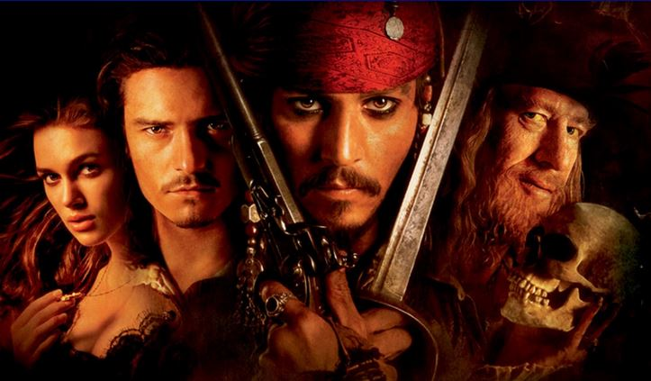
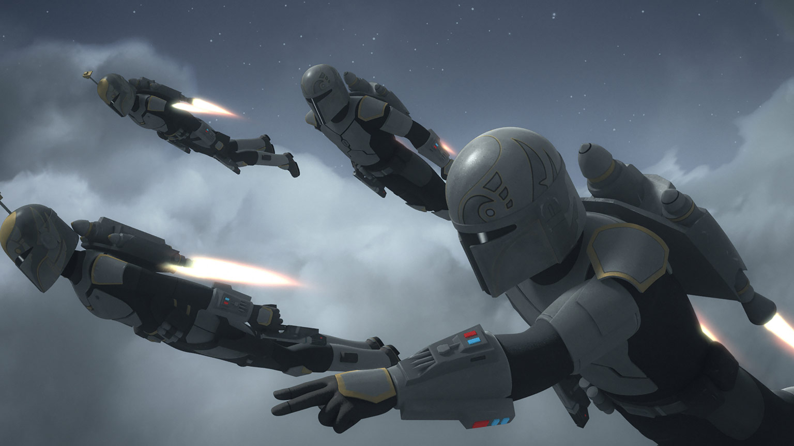
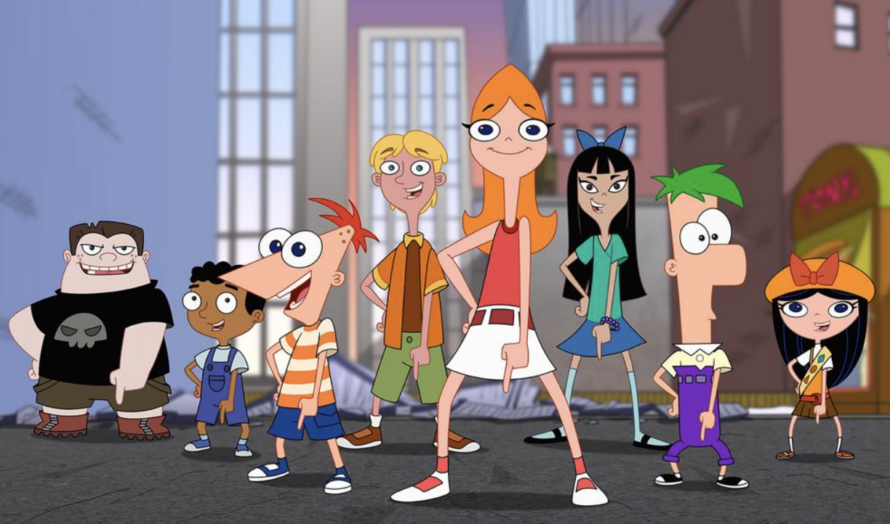

CRAZY TRANSLATOR 😜
MINIONS

Minions are a species of tiny yellow henchmen; they look like unusually dressed Mike and Ike candies. They're earnestly driven by the desire to serve an evil boss, though they often screw up because they're selfish, easily distracted, and generally inept. They vary in height, but it's safe to say they're between 2 and 3 feet tall (though closer to 2). They communicate using a gibberish language that's understandable to them and a few people who have longstanding relationships with them.
They're also resilient. Minions have been turned into evil purple versions of themselves, transformed into giants, crushed, tortured, and buried without being worse for wear (this may be the reason they've survived so long).
PIRATES OF THE CARRABIAN

Pirates of the Caribbean is a Disney media franchise encompassing numerous theme park rides, a series of films, and spin-off novels, as well as a number of related video games and other media publications. The franchise originated with the Pirates of the Caribbean theme ride, which opened at Disneyland in 1967 and was one of the last Disneyland rides overseen by Walt Disney. Disney based the ride on pirate legends and folklore.
MANDALORIANS

One of the most fearsome visages in the galaxy is the expressionless mask of a Mandalorian. We might not know much about the man under the helmet in The Mandalorian, the new live-action Star Wars series that debuted on Disney+ this week, but the iconic armor itself tells us a lot. From a history rife with violence and conflict, to the planet’s avowed neutrality during the last days of the Republic, and its Imperial occupation in the Galactic Civil War, Mandalore is a world of proud warriors and citizens who honor its storied history.
FERB FLYNN

Phineas Flynn is a fictional character from the animated television series Phineas and Ferb.
The series concerns Phineas's attempts to avoid boredom by finding something new to do for each day of his summer vacation. His sister's name is Candace Flynn, who tries to reveal their outrageous creations, but to no avail. He does this with his less-talkative stepbrother Ferb, and often with many other neighborhood children. The activities they devise usually involve outlandish contraptions, including roller coasters, haunted houses, roller rinks, and a backyard beach etc. which Phineas designs and Ferb builds.